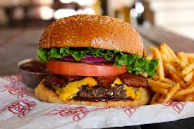

|  | 100% Beef Patty: Ingredients: 100% pure USDA inspected beef; |
|---|---|
Slice potatoes into French fries, and place into cold water so they won't turn brown while you prepare the oil. |
|
Jicama-Mango Slaw: |
|
Juice the apple and ginger together, then juice the rest of the fruit. |